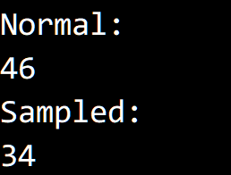

© 2019 《算法（第四版）》C# 题解 | Provided By 沈星繁
搜索解答
目前已完成到 2.5
2.5.23
上次更新：2019-02-11
题目
2.5.23 选择的取样：实验使用取样来改进 select() 函数的想法。 提示：使用中位数可能并不总是有效。
解答
这里我们使用 Floyd-Rivest 算法进行优化，大致思想是： 我们期望第 $ k $ 大的元素位于 a[k] 附近，因此优先对 a[k] 附近的区域进行选择。 每次切分时枢轴都选择 a[k]，先递归对样本区域选择，再对整个数组进行选择。
运行示意图： 
测试结果： 
代码
/// <summary>
/// Floyd–Rivest 方法优化，令 a[k] 变成第 k 小的元素。
/// </summary>
/// <typeparam name="T">元素类型。</typeparam>
/// <param name="a">需要排序的数组。</param>
/// <param name="k">序号</param>
/// <returns></returns>
static T Select<T>(T[] a, int lo, int hi, int k) where T : IComparable<T>
{
if (k < 0 || k > a.Length)
throw new IndexOutOfRangeException("Select elements out of bounds");
while (hi > lo)
{
if (hi - lo > 600)
{
int n = hi - lo + 1;
int i = k - lo + 1;
int z = (int)Math.Log(n);
int s = (int)(Math.Exp(2 * z / 3) / 2);
int sd = (int)Math.Sqrt(z * s * (n - s) / n) * Math.Sign(i - n / 2) / 2;
int newLo = Math.Max(lo, k - i * s / n + sd);
int newHi = Math.Min(hi, k + (n - i) * s / n + sd);
Select(a, newLo, newHi, k);
}
Exch(a, lo, k);
int j = Partition(a, lo, hi);
if (j > k)
hi = j - 1;
else if (j < k)
lo = j + 1;
else
return a[j];
}
return a[lo];
}